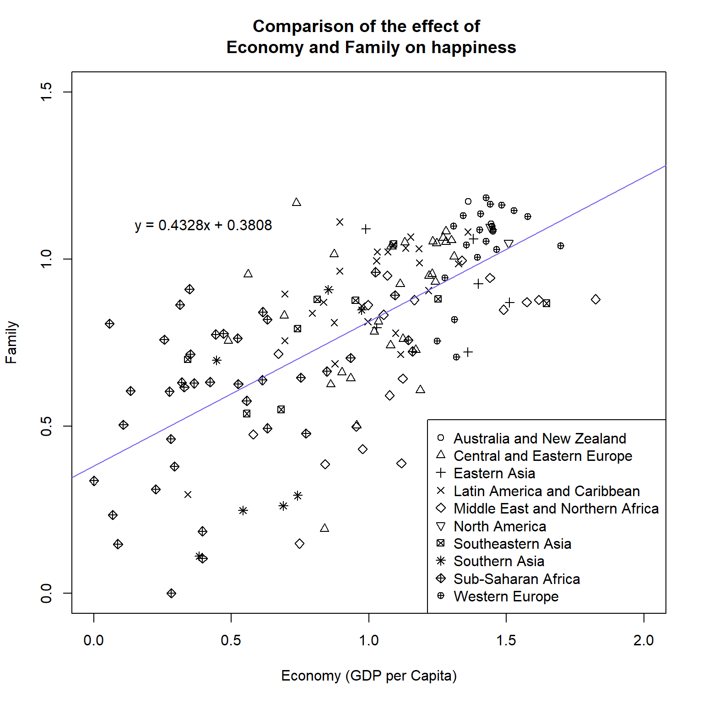
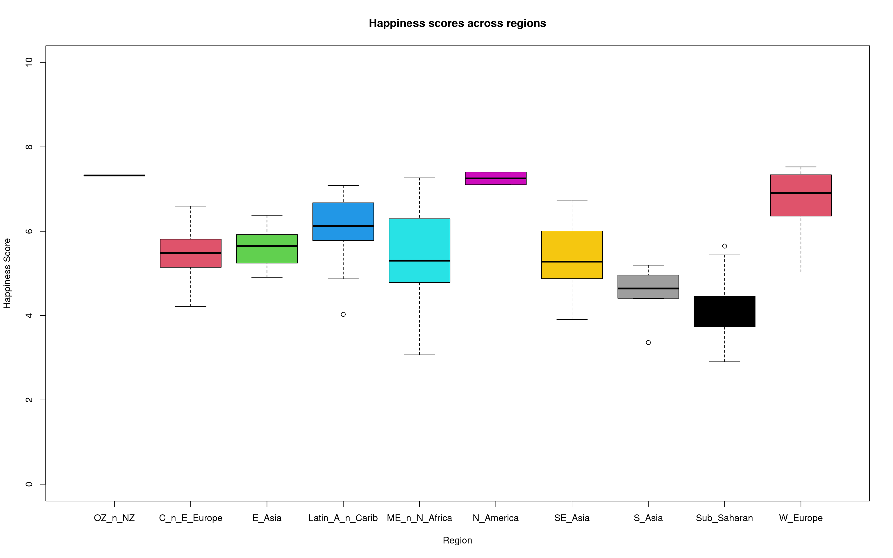

Chapter 18 Stats exercises
Please use your "Exercises.R" script for this exercise and the main workshop directory as the working directory. Ensure you are using annotations and code sections to keep the contents clear and separated.
18.1 World happiness report

18.1.1 Data
For this exercise we will be looking at the World Happiness Report for 2016. This report is a survey of the state of global happiness.
Download world_happiness_report_2016.csv to the directory "Chapter_17-18".
Source: https://www.kaggle.com/unsdsn/world-happiness?select=2016.csv
The columns for the data are:
- Country: Name of the country.
- Region: Region the country belongs to.
- Happiness Rank: Rank of the country based on the Happiness Score.
- Happiness Score: A metric measured in 2016 by asking the sampled people the question: "How would you rate your happiness on a scale of 0 to 10 where 10 is the happiest".
- Lower Confidence Interval: Lower Confidence Interval of the Happiness Score.
- Upper Confidence Interval: Upper Confidence Interval of the Happiness Score.
- Economy (GDP per Capita): The extent to which GDP contributes to the calculation of the Happiness Score.
- Family: The extent to which Family contributes to the calculation of the Happiness Score.
- Health (Life Expectancy): The extent to which Life expectancy contributed to the calculation of the Happiness Score.
- Freedom: The extent to which Freedom contributed to the calculation of the Happiness Score.
- Trust (Government Corruption): The extent to which Perception of Corruption contributes to Happiness Score.
- Generosity: The extent to which Generosity contributed to the calculation of the Happiness Score.
- Dystopia Residual: The extent to which Dystopia Residual contributed to the calculation of the Happiness Score. More info in the "What is Dystopia?" section at https://worldhappiness.report/faq/.
18.1.2 Tasks & questions
With that information carry out the following tasks and answer the questions:
- Read in the file "world_happiness_report_2016" as data frame called "happy_df". Ensure strings are read in as factors and that none of the columns are read in as row names.
- Answer the following questions using the output from one function:
- How many countries are in the region "Western Europe"?
- What is the maximum number in the "Happiness Score" column?
- From the columns "Economy (GDP per Capital)" to "Dystopia Residual", which has the highest mean and which has the lowest?
- Create the below plot.
- The equation does not have to be in exactly the same position as the below. Just make sure it is all clearly visible, it contains the same text, and it is not on top of any points.
- The colour for the line is "mediumslateblue"
- Note you can put "\n" into a label/title to make a new line.
- e.g "This is the first line \n and this is the second line" 
- It may be a bit awkward to get the right size for the plot in the "Plots" pane. Therefore save it as a png file with the following options:
- File name of "Economy_vs_family.png"
- Dimensions of file is 8 inches for height and width
- Resolution of 200
- Answer the following questions using information on the line graph and the linear model.
- Does the linear model have a positive or negative gradient?
- Which variable (Economy or Family) has higher values?
- If the value of Economy was 2.1 what would be the predictive value of Family according to the linear model equation?
- Which region appears to have the highest values for Economy and for Family?
- Create the following boxplot.
- You can change the the levels with the following code
short_region_names <-
c("OZ_n_NZ", "C_n_E_Europe", "E_Asia", "L_America_n_Caribbean",
"Middle_E_n_N_Africa", "N_America", "SE_Asia", "S_Asia",
"Sub_Saharan", "W_Europe")
levels(happy_df$Region) <- short_region_names
Save the above as a jpeg called "Region_happiness_boxplots.jpg" with a width of 1600 pixels and a height of 750 pixels.
Last task! Carry out t-tests on the following comparisons for Happiness Score and determine if the means are significantly different.
- West Europe and North America
- West Europe and South Asia
- South Asia and South Eastern Asia